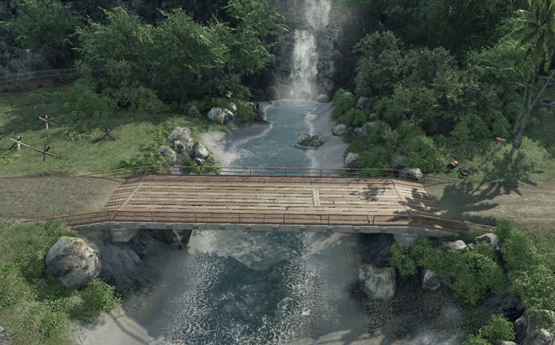

Обзор
Инструмент «Река» функционирует аналогично инструменту «Дорога», но он предпочтительнее для настройки рек, поскольку он содержит еще несколько очень важных параметров, необходимых для создания реалистично выглядящих рек.
Использование инструмента River Tool
Инструмент River Tool используется для создания рек. Ограничением River Tool является то, что он по существу является 2D. Это означает, что сложно создавать реки, текущие с гор, и невозможно создавать водопады с помощью инструмента «Река». Чтобы создать реки, бегущие вниз по склону, лучше всего использовать серию рек вместе с периодическими водопадами. Осторожное использование частиц особенно важно для того, чтобы это выглядело убедительно. Можно создать плоскую реку, а затем слегка повернуть ее вдоль Х оси, однако это следует использовать только для создания очень небольшого наклона.
Для водопадов можно использовать эффекты частиц, а также инструмент DCC для создания водопада. Для этого необходима простая геометрия, повторяющая геометрию ландшафта, с материалом, которому назначен шейдер Illum, установленный в качестве декали, и текстурной картой с альфа-каналом в диффузном слоте с анимацией колебаний на ней.

Река на уровне
Настройка параметров реки
В дополнение к упомянутым ранее параметрам шейдера (которые можно настроить в Material Editor), объект River Tool также имеет параметры, которые можно настроить через панель свойств объекта River.
На панели «Свойства» можно изменить несколько настроек реки, в том числе способ изготовления плиток, окраску тумана, настройки каустики и многое другое.
Также здесь можно настроить параметр Скорость реки. Это скорость, с которой физические объекты будут float плыть по течению; это не влияет на вид самой реки. Визуальная скорость реки контролируется с помощью Скорость потока параметр в параметрах шейдера материала.
Свойства рек разделены на два типа: River и Spline. Свойства реки специфичны для самой реки, тогда как свойства Spline изменяют форму реки.
Ривер Недвижимость
Недвижимость | Описание |
|---|---|
Ширина | Ширина реки. (Обычно устанавливается намного шире, чем фактическая ширина реки, поскольку визуальная ширина реки определяется окружающей ее местностью. |
Ширина границы | Используется только для функции «Выровнять карту высот». Это позволит сделать края геометрии местности более гладкими, если Ширина границы Значение выше, чем Ширина ценность. |
Размер шага | Устанавливает расстояние между каждым шагом вдоль сплайна. Меньшее значение увеличит количество полигонов, используемых для поверхности реки, но также сгладит углы. |
Стереть ширину овощей | Указывает, насколько далеко от реки будет удалена растительность. Это относится только к растительности, нарисованной с помощью редактора растительности. |
Стереть Veg Width Var | Устанавливает, насколько будет меняться расстояние стирания ширины овощей. |
Размер шага | Меньший размер шага увеличит количество полигонов, используемых для поверхности реки, поэтому для рек с плавными углами используйте меньшее значение, чем значение по умолчанию 4. |
Просмотр Dist Radio | Указывает, насколько далеко будет отображаться объект реки. |
Длина плитки | Длина текстуры реки. Настройте это в сочетании с размером шага, чтобы избежать растягивания текстур. |
Операторы |
|
Свойства речных сплайнов
Недвижимость | Описание |
|---|---|
Глубина | Определяет глубину реки. |
Скорость | Это скорость, с которой физические объекты будут float плыть по течению; это не влияет на вид самой реки. Визуальная скорость реки контролируется с помощью Скорость потока параметр в параметрах шейдера материала. Используйте отрицательные значения, чтобы двигаться в противоположном направлении. |
Плотность тумана | Определяет, насколько плотным выглядит туман. Большее число приведет к более густому туману. |
Цвет тумана | Устанавливает цвет тумана. |
Множитель цвета тумана | Определяет яркость цвета тумана. |
Цвет тумана, на который влияет солнце | Если установлено значение true, значение цвета солнца (см. Environment Editor) повлияет на цвет тумана на реке. |
Затенение туманом | Если включено, на поверхности реки появятся тени. Вы можете управлять темнотой тени, допустимый ввод 0-1. r_FogShadowsWater для этого необходимо установить значение «1», что в настоящее время доступно только в очень высоких характеристиках. Если вы используете Vol Fog Shadows в Environment Editor, вы теряете контроль над темнотой теней (автоматически устанавливается на полную). Преимущество здесь в том, что туман в Водном объеме получит объемные тени. См. ниже для сравнения. |
Шапочный туман на глубине объема | Если установлено значение false, туман будет продолжать отображаться ниже указанной глубины реки. |
U-шкала | Устанавливает мозаику текстуры по оси U. |
V-шкала | Устанавливает мозаику текстуры по оси V. |
Каустика | См. Водные каустики для получения дополнительной информации. |
Каустическая интенсивность | См. Водные каустики для получения дополнительной информации. |
Каустическая черепица | См. Водные каустики для получения дополнительной информации. |
Каустическая высота | См. Водные каустики для получения дополнительной информации. |
Дополнительные настройки
Редактирование формы
Редактировать кнопка позволит изменять, добавлять (CTRL + клик на линии) или удаление (double-клик по точке) точек на линии фигуры реки.
Ширина
Устанавливает ширину реки на точку вдоль сплайна.
Выровнять карту высот
Изменит геометрию местности в зависимости от формы реки и параметра ширины ее границы.